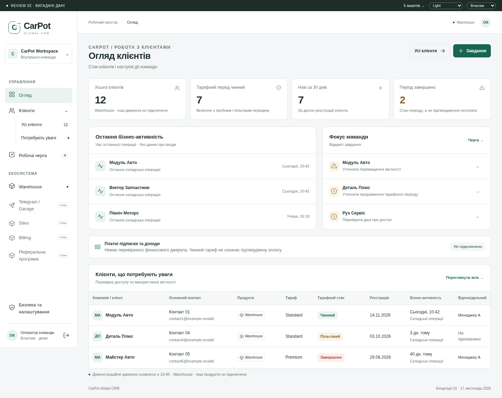
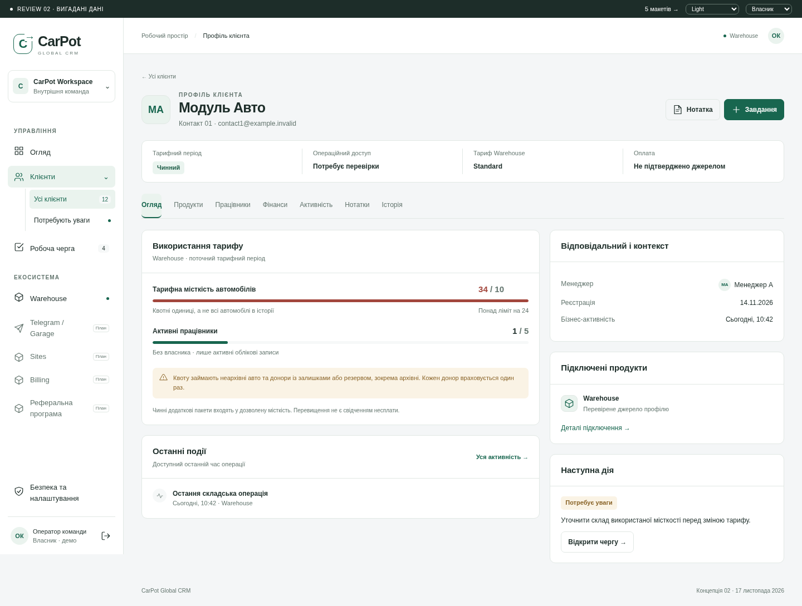
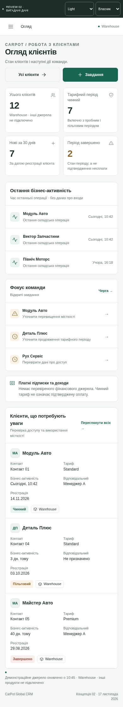

01 / Головний огляд
Чотири показники з чинних read-model полів. Остання відома активність замість вигаданого денного графіка. Фінанси позначені як непідключені.
Відкрити огляд →Фінальна концепція для погодження: клієнти, тарифний контекст і наступні дії. Усі приклади вигадані. Робоча CRM, дані та авторизація не змінені.

Чотири показники з чинних read-model полів. Остання відома активність замість вигаданого денного графіка. Фінанси позначені як непідключені.
Відкрити огляд →
Рядок відкриває профіль; пошук, фільтри й пагінація зберігають контекст. На tablet/mobile — спільні за даними картки.
Відкрити список →
Сім вкладок. Без повторення контактів і лімітів у кількох секціях. 34/10 пояснено як використання тарифної місткості.
Відкрити профіль →
Конкретна дія та прямий перехід до клієнта. Терміновість від строку, мінімум кольорових сигналів, збереження клавіатурного фокуса.
Відкрити чергу →
Спільні дані й компоненти, великі touch targets, кероване меню з focus trap, картки компаній, команди та завдань.
Відкрити mobile →Це фінальний дизайн для погодження, а не інтеграція у CRM. Немає API-викликів, реальних оплат або авторизації. Нотатки й завдання змінюються лише в пам'яті макета. Майбутні Telegram/Sites/Billing/referrals недоступні. Недоступні історія та фінансові дані не підмінені вигаданими записами.